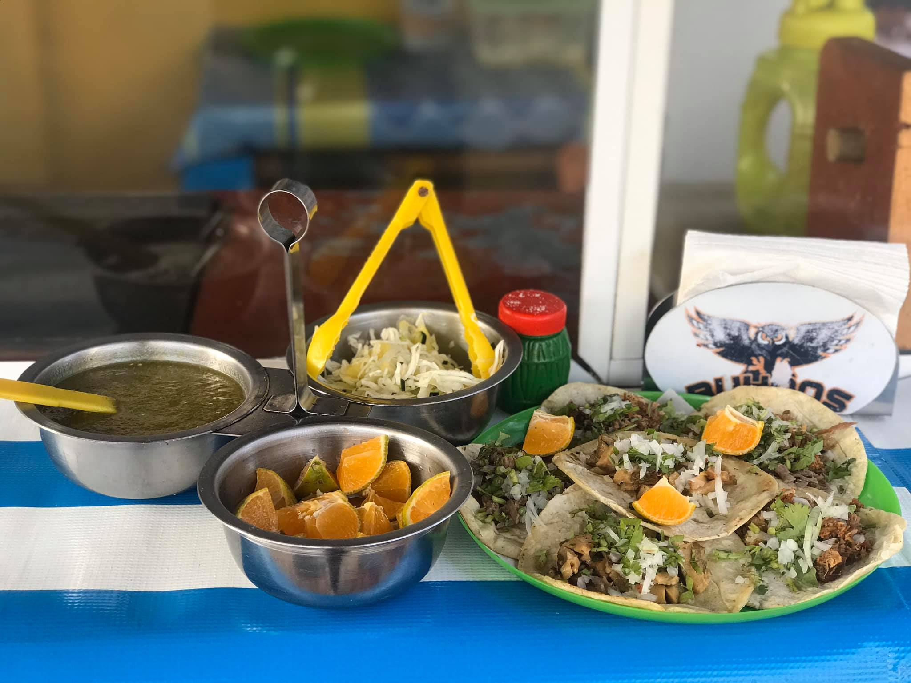
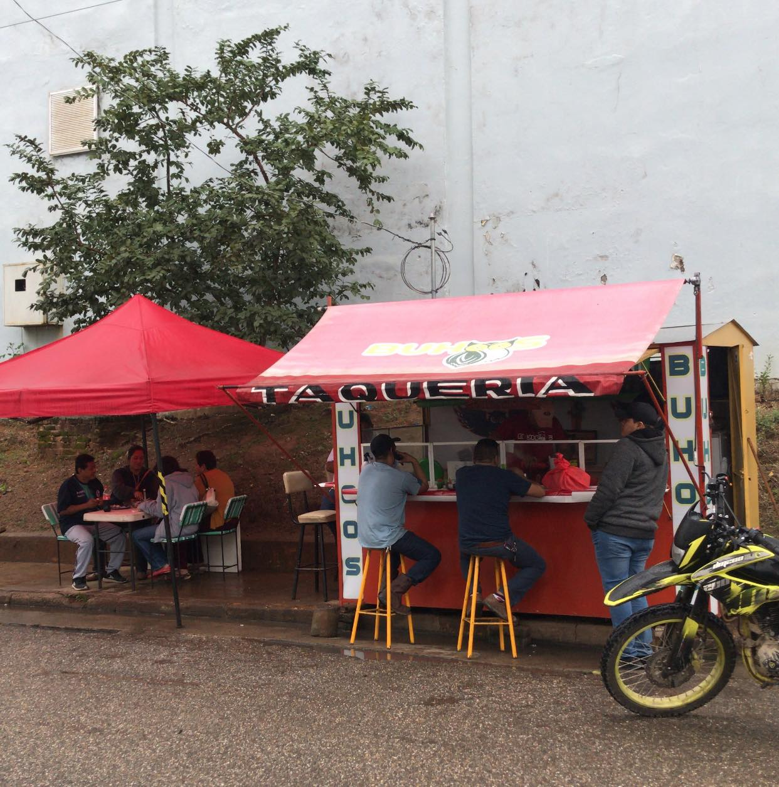

Es un negocio de tacos muy ricos, donde cada taco está hecho con cuidado y esmero ya que Siempre se atiende con mucha amabilidad y cortesía.
¡Ven pruébalos!
Te harán volver una y otra vez y además la Taquería de los Buhoos se ha consolidado como un rincón emblemático, donde la tradición y la innovación se fusionan para ofrecer una experiencia gastronómica inolvidable.
Fundada sobre la premisa de resaltar los auténticos sabores de México, este establecimiento se distingue por su compromiso con la calidad, la frescura de sus ingredientes y la pasión con la que se preparan cada uno de sus tacos.
TACOS QUE MATARAN TU HAMBRE
¿Qué esperas?
Ven, pruébalos y disfruta de estos deliciosos tacos...
Se preguntarán ¿de qué tipos de tacos tienen?...
En la Taquería de los Buhoos podrán encontrar tacos de longaniza, carne, ubre, campechano y, por último, pero no menos importante también venden unas deliciosas Quesadillas de longaniza, carne, campechano además el sabor es muy bueno.

Cabe señalar que uno de los ingredientes que les da un mejor sabor a los tacos es la salsa que hacen en la taquería, ya que hay una gran variedad ya sea desde salsa verde, salsa de piña, salsa de ajo y hasta salsa de chile seco, son muy buenas salsas y si llegan a tener sed tiene refrescos, como Coca Cola, Seven, Fanta, Sprite, Jarrito, y Agua, todo bien frescos.
Si aún no te logras convencer de que están bien buenos los tacos de los búhos te reto a venir y aprobarlos tu mismos o tu misma la última palabra la tiene el cliente, pero algo de lo que deben estar seguros y seguras es que volverán a probarlos, así que adelante no sean tímidos o tímidas aquí los esperan, con una gran sonrisa.
Se puede localizar en tres valles Veracruz en la calle 203 Francisco Gutiérrez Barrio, es muy fácil de localiza el local por su icónico color amarillos, aparte que el nombre del local lo tiene escrito del lado izquierdo como también en lado derecho, pero si sigues preguntándote o no te pudiste dar una idea clara de cómo se ve se te dejara una imagen de como se ve el puesto de los buhoos.
¡Así qué esperas adelante anímate, no te arrepentirás!

Cabe decir que como ultimo en el puesto de los buhoos tienen una cuenta de Facebook, donde los dueños del puesto tienen fotos de los tacos y también con sus clientes, ya que si alguno se llega a preguntar cómo es que se en cuenta su cuenta de Facebook bueno se puede encontrar como "Taquería Buhoos", pero buen es todo me despido espero que tengan un buen Dia, Tarde o Noche.